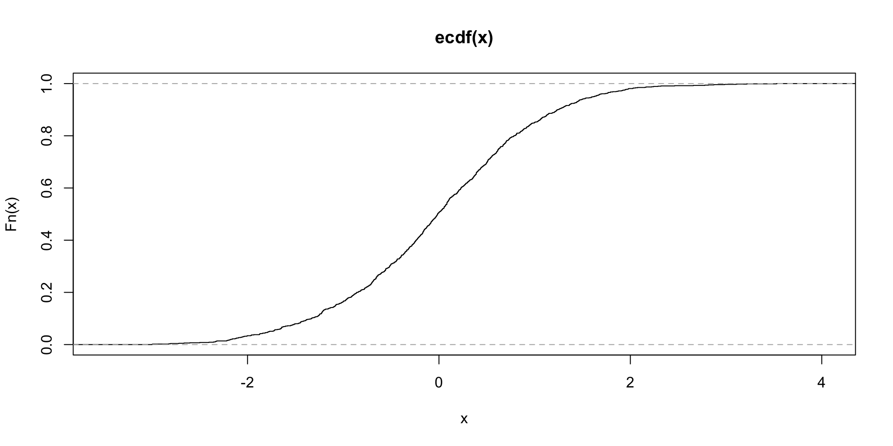

(Neo) Constructivism
2025-10-03
Department of Psychology
Prelude
Today’s topics
Background ideas
Hull (1935)
One of the most striking things about the present state of the theory of learning and of psychological theory in general is the wide disagreement among individual psychologists.
…if all of these twelve psychologies should be in specific disagreement on a given point, then at least eleven of them must be wrong…
Hull (1935)
The obvious implication of this general situation has recently called out a timely little book by Grace Adams (i) entitled, ’Psychology: science or superstition?…
…we are divided into sects, too many of which show emotional and other signs of religious fervor. This emotionalism and this inability to progress materially toward agreement obviously do not square with the ideals of objectivity and certainty which we associate with scientific investigation…
Hull (1935)
Somehow we have permitted ourselves to fall into essentially unscientific practices. Surely all psychologists truly interested in the welfare of psychology as a science, whatever their theoretical bias may be, should cooperate actively to correct this.
Hull (1935)
- Four typical scientific procedures
- “Random observation”
- “Systematic exploration”
- “Experimental testing of isolated hypotheses”
- “Experiments…directed by systematic and integrated theory”
Hull (1935)
this fourth type of investigation, in addition to yielding facts of intrinsic importance, has the great virtue of indicating the truth or falsity of the theoretical system from which the phenomena were originally deduced…
Four “essentials of sound scientific theory”
The definitions and postulates of a scientific system should be stated in a clear and unambiguous manner, they should be consistent with one another, and they should be of such a nature that they permit rigorous deductions.
– Hull (1935)
Four “essentials of sound scientific theory”
The labor of deducing the potential implications of the postulates of the system should be performed with meticulous care and exhibited, preferably step by step and in full detail. It is these deductions which constitute the Bubstance of a system.
– Hull (1935)
Four “essentials of sound scientific theory
The significant theorems of a truly scientific system must take the form of specific statements of the outcome of concrete experiments or observations. The experiments in question may be those which have already been performed, but of particular significance are those which have not previously been carried out or even planned. It is among these latter, especially, that crucial tests of a theoretical system will be found.
– Hull (1935)
Four “essentials of sound scientific theory
The theorems so deduced which concern phenomena not already known must be submitted to carefully controlled experiments. The outcome of these critical experiments, as well as of all previous ones, must agree with the corresponding theorems making up the system.
– Hull (1935)
“Is rigorous theory in psychology possible?”
If scientific theories are really impossible in psychology, the quicker we recognize it, the better. There are signs, however, that the beginnings of a genuinely scientific theory of mammalian behavior are already on their way.
– Hull (1935)
“Is rigorous theory in psychology possible?”
Extremely promising examples of such achievements in intimately related fields have been published…It is probably not accidental that all three of the above studies are essentially mathematical…
– Hull (1935)
“Is rigorous theory in psychology possible?”
it serves to raise the important question as to whether rigorous logical deductions can be made on the basis of such quasi-mathematical concepts as have so far emerged from behavior experiments.
– Hull (1935)
“Is rigorous theory in psychology possible?”
It is a noteworthy event, in the present status of psychological theory, to have a deduction sufficiently anchored by logic to the postulates of the system that a collision with a stubborn experimental fact shall be able to force a revision of the system. It is reasonably safe to assume that the rarity of such collisions at present is not due to the infallibility of current theoretical constructs…
– Hull (1935)
“Is rigorous theory in psychology possible?”
Until our systems become sufficiently clear and definite for this kind of event to be of fairly frequent occurrence, we may well suspect that what passes as theory among us is not really making contact with our experimental facts.
– Hull (1935)
Evaluating theories
it should be obvious that all mere systems of classification must be rejected. A dictionary may be systematic, but it can hardly be rated as a theoretical system even when the terms are largely of new coinage.
– Hull (1935)
Evaluating theories
Some psychologists appear to have assumed that only principles incapable of direct observational verification should be admitted as postulates, whereas others may conceivably have assumed that only principles capable of direct observational verification should be admitted.
– Hull (1935)
Evaluating theories
…history of scientific practice so far shows that, in the main, the credentials of scientific postulates have consisted in what the postulates can do, rather than in some metaphysical quibble about where they came from.
– Hull (1935)
Evaluating theories
Let the psychological theorist begin with neurological postulates, or stimulusresponse postulates, or structural postulates, or functional postulates, or factor postulates, or organismic postulates, or Gestalt postulates, or sign-Gestalt postulates, or hormonic postulates, or mechanistic postulates, or dynamic postulates, or postulates concerned with the nature of consciousness, or the postulates of dialectical materialism, and no questions should be asked about his beginning save those of consistency and the principle of parsimony.
Evaluating theories
In particular we must be on our guard against what might be called the ‘anthropomorphic fallacy.’ By this is meant a deduction the critical point of which turns out to be an implicit statement which, if made explicit, would be something like, “If I were a rat and were in that situation I would do so and so.” Such elements in a deduction make it a travesty because the very problem at issue is whether a system is able to deduce from its postulates alone what a normal man (or rat) would do under particular conditions.
Summing up Hull (1935)
Scientific theory in its best sense consists of the strict logical deduction from definite postulates of what should be observed under specified conditions1.
– Hull (1935)
Summing up Hull (1935)
If the deductions are lacking or are logically invalid, there is no theory;
if the deductions involve conditions of observation which are impossible of attainment, the theory is metaphysical rather than scientific;
and if the deduced phenomenon is not observed when the conditions are fulfilled, the theory is false.
Summing up Hull (1935)
…it is believed that the thing most urgently needed at the present moment is a clear statement of postulates with accompanying definitions of terms.
Glossary
Connectionism: An approach to modeling cognition based on the idea that the knowledge underlying cognitive activity is stored in the connections among neurons. In connectionist models, knowledge is acquired by using an experience-driven connection adjustment rule to alter the strengths of connections among neuron-like processing units.
– McClelland et al. (2010)
Glossary
Dynamical field theory: Originally formulated as a theory of movement preparation, in which movement parameters are represented by distributions of activation defined over metric spaces, the theory has recently been extended to address cognitive function. Dynamical fields are formalizations of how neural populations represent the continuous dimensions that characterize perceptual features, movements and cognitive decisions, and dynamical field theory specifies how activity in such neural populations evolves over time.
– McClelland et al. (2010)
Glossary
Dynamical system: A mathematical formalization that describes the time evolution of physical and cognitive states. Examples include the mathematical models that describe the swinging of a clock pendulum, the flow of water in a pipe, the movement of the limbs of a walking organism, and the drift that occurs in working memory towards or away from special points in the state space.
– McClelland et al. (2010)
Glossary
Emergentist approaches: Approaches to modeling cognition based on the idea that the structure seen in overt behavior and the patterns of change observed in behavior reflect the operation of subcognitive processes such as propagation of activation and inhibition among neurons and adjustment of strengths of connections between them. In contrast to emergentist approaches, symbolic approaches, including structured probabilistic models, model cognition directly at the level of manipulation of symbols and symbolic structures such as propositions and rules.
– McClelland et al. (2010)
Glossary
Semantic cognition: A cognitive domain encompassing knowledge of the properties of objects and their relationships to other objects, as well as the acquisition of such knowledge and its use in guiding inference.
– McClelland et al. (2010)
Glossary
Structured probabilistic models: Models that specify that cognitive activity involves the use of probabilistic information to select among and specify the parameters of particular structural forms that specify relationships among items represented by discrete symbols.
– McClelland et al. (2010)
Glossary
Universal grammar: A hypothetical construct that arose in the context of generative grammar. A universal grammar, if one existed, would be an idealized structured representation that captures properties shared by all natural languages.
– McClelland et al. (2010)
Types of change
Figure 1: Histogram of a random normal sample of \(n\)=1000.
Types of change
Figure 2: Cumulative distribution of x
Psychometric function

Psychometric function
Experience-expectant vs. experience-dependent
Experience-expectant information storage refers to incorporation of environmental in- formation that is ubiquitous in the environment and common to all species members, such as the basic elements of pattem perception.
– Greenough, Black, & Wallace (1987)
Experience-expectant vs. experience-dependent
Experience-dependent information storage refers to incorporation of environmental information that is idiosyn- cratic, or unique to the individual, such as leaming about one’s specific physical environment or vocabulary.
– Greenough et al. (1987)
What is Darwin’s theory?

What is Darwin’s theory?
- More individuals are produced each generation than can survive.
- Phenotypic variation exists among individuals and the variation is heritable.
- Those individuals with heritable traits better suited to the environment will survive.
- When reproductive isolation occurs new species will form.
– Wikipedia contributors (2025c)
Gilmore’s version
- Individuals are mortal; individuals vary; some of the variation is heritable.
- Individuals have different reproductive outcomes; some reproductive outcomes relate to heritable factors.
- Differential reproductive outcomes across individuals result in selection of some heritable factors over generations.
- Heritable factors that don’t affect reproductive outcomes are not subject to selection pressure.
Aristotle’s four causes
- material
- formal
- efficient
- final

– Wikipedia contributors (2025a)
Constructivism & its variants
Limitations of Piaget (Newcombe, 2011b)
- Piaget did not overcome the nativist-empiricist split
- “no clear evidence for stages and structuralism1”
- “insufficient attention to the gradualisms and localisms of cognitive progress”
- “excessive emphasis on verbal justifications of judgments”
Postulates of nativism
Nativism solves the first of Piaget’s problems by definition—by postulating the richest starting points imaginable, ones that encompass all the ‘‘core knowledge’’ required to understand the world…
– Newcombe (2011b)
Postulates of nativism
the mind, or brain, is organized into modules (Fodor, 1983) that are not only neurally specialized and present from the beginning but also do not accept information from each other…
– Newcombe (2011b)
Postulates of nativism
solved the second of Piaget’s main problems (one that had shrunk to minuscule size by the hypothesized existence of so much innate knowledge) essentially by fiat—by postulating simple ‘‘triggers’’ that led children to select parameters or fill content into slots.
– Newcombe (2011b)
Problems with the postulates of nativism
None of these postulates of nativism are, however, supported by the evidence. Starting points are strong, but infants are not tiny adults with insufficient control over their arms and legs.
– Newcombe (2011b)
Problems with the postulates of nativism
There is much more conceptual change than nativists envision and strong evidence that environmental input is integral to cognitive development in complex ways that go far beyond triggering (Newcombe, 2002).
– Newcombe (2011b)
Alternative approaches
- Information processing
- “more initial competence than most such modelers were willing to contemplate”
- Connectionist modeling
- “failed to use empirical information about the kind and sequence of environmental information to guide the models”
- Vygotsky
- “concentrates too exclusively on social and cultural interaction”
Neoconstructivism
- “consider Piaget in a new light.”
his fundamental idea seems now to have been absolutely right: that a biologically prepared mind interacts in biologically evolved ways with an expectable environment that nevertheless includes significant variation.
– Newcombe (2011b)
Tenets of neoconstructivism
- Everyone is a Darwinist1
- Experience expectancy (Greenough et al., 1987)
- World is richly structured (James J. Gibson, 1899; J. J. Gibson, 1966)
- Learners compute probabilities (Griffiths, Chater, Kemp, Perfors, & Tenenbaum, 2010), not just associations
Tenets of neoconstructivism
- Tenets 2-4 support selection among multiple info sources & inference making
- Action plays key role (James J. Gibson, 1899; J. J. Gibson, 1966)
- Development \(\sim\) (similar to) but \(\neq\) learning
- Change qualitative or quantitative depending on granularity of observation
Tenets of neoconstructivism
- Analyses require formal, material, final, and efficient causes (Aristotle; Wikipedia contributors (2025a))
Formal cause is analogous to developmental description…
material cause is analogous to the neural substrate…
final cause is analogous to putting development in an evolutionary and adaptive context…
efficient cause is analogous to an analysis of the interactions of input with the neural substrate and the current cognitive state of the learner.
Newcombe (2011a) Table 1
Newcombe (2013) Table 1
Critique: Mareschal (2011)
- Neoconstructivism asks how knowledge emerges & why
- But no specific mention of the biological substrate
Neuro-constructivism
knowledge-related representations are context dependent. This is true at all levels of description.
encellment, whereby the functions that a neuron will eventually take on in the developing brain depend on the cellular and chemical context of its neighbors.
Neuro-constructivism
embrainment embodies the idea that functional brain systems do not develop in isolation.
the developing child is both embodied and embedded within a specific environment
– Mareschal (2011)
Neuro-constructivism
partial representations, in which the outcome of context-dependent development is the emergence of representations that are just sufficient to support behavior, in the context of preexisting representations elsewhere in the brain and preexisting structures in the world.
– Mareschal (2011)
Neuro-constructivism
In other words, there is no need to develop complete representations that encode all the information about an event or object if part of that information is already present elsewhere in the neural-cognitive system or supported by structures in the world.
– Mareschal (2011)
Critique: J. P. Spencer & Buss (2011)
- Empirical demonstrations do not stand alone
- Need better grounded concepts and descriptions of process
- “agree that the theoretical landscape in developmental science is in crisis”
- Developmental science needs a “way out” of the “isms”
Critique: J. P. Spencer & Buss (2011)
- Newcombe’s tenets “muddy the water”
- “Must collectively elevate our theoretical game”
- Points to Hull (1935) for inspiration
- Connectionism and dynamic systems theory reconsidered (J. Spencer & Thomas, M. S. C., & McClelland, J. L., 2009)
- “no more ‘isms’ until we eliminate one.”
Response: Newcombe (2011a)
- Darwinism does not differentiate among theories
- “…interest in the brain” doesn’t either, hence not neuro-constructivism
Response: Newcombe (2011a)
Newcombe (2011a) Table 1
Evolving comparisons
Discussion
Core issues
- Do we need another “ism”?
- Neo- or neuro-constructivism?
- Has developmental psychology fallen “into essentially unscientific practices…” (Hull, 1935)
Core issues
- Are Hull’s (1935) recommendations on point?
- If so, what are the definitions? Postulates? (Hull, 1935)
- Are core knowledge theories covertly “anthropomorphic” (Hull, 1935)
- What role should evolutionary theory (and evidence) play?
Next time…
- Constructivism: Deep dive
- Student Presentation E: How do developmental disorders inform our understanding of cognitive development? (Presenter: Katie Billetdeaux; Discussant: Pratt Srinivasan)
- Read: A. Karmiloff-Smith (1998)
- Student Presentation F: The risks of generalization (Presenter: Olivia Bell; Discussant: Carlos Almeida)
- Student Presentation E: How do developmental disorders inform our understanding of cognitive development? (Presenter: Katie Billetdeaux; Discussant: Pratt Srinivasan)
Resources
About
This talk was produced using Quarto, using the RStudio Integrated Development Environment (IDE), version 2025.5.1.513.
The source files are in R and R Markdown, then rendered to HTML using the revealJS framework. The HTML slides are hosted in a GitHub repo and served by GitHub pages: https://psu-psychology.github.io/psy-548-fall/